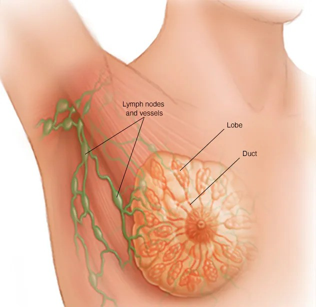

Symptoms & Causes
On this page
Overview

Breast anatomy
Breast cancer is a kind of cancer that begins as a growth of cells in the breast tissue.
After skin cancer, breast cancer is the most common cancer diagnosed in women in the United States. But breast cancer doesn't just happen in women. Everyone is born with some breast tissue, so anyone can get breast cancer.
Breast cancer survival rates have been increasing. And the number of people dying of breast cancer is steadily going down. Much of this is due to the widespread support for breast cancer awareness and funding for research.
Advances in breast cancer screening allow healthcare professionals to diagnose breast cancer earlier. Finding the cancer earlier makes it much more likely that the cancer can be cured. Even when breast cancer can't be cured, many treatments exist to extend life. New discoveries in breast cancer research are helping healthcare professionals choose the most effective treatment plans.
Types
Angiosarcoma
Angiosarcoma is a rare cancer that begins in the cells lining blood vessels or lymph vessels in the breast.

Ductal carcinoma in situ (DCIS)
DCIS is considered the earliest form of breast cancer. It’s noninvasive, meaning it hasn’t spread out of the milk duct.

Inflammatory breast cancer
Inflammatory breast cancer is an aggressive form of breast cancer that causes the breast to become red, swollen and tender.

Invasive lobular carcinoma
This type of cancer starts in the milk-producing glands (lobules) and invades surrounding breast tissue.